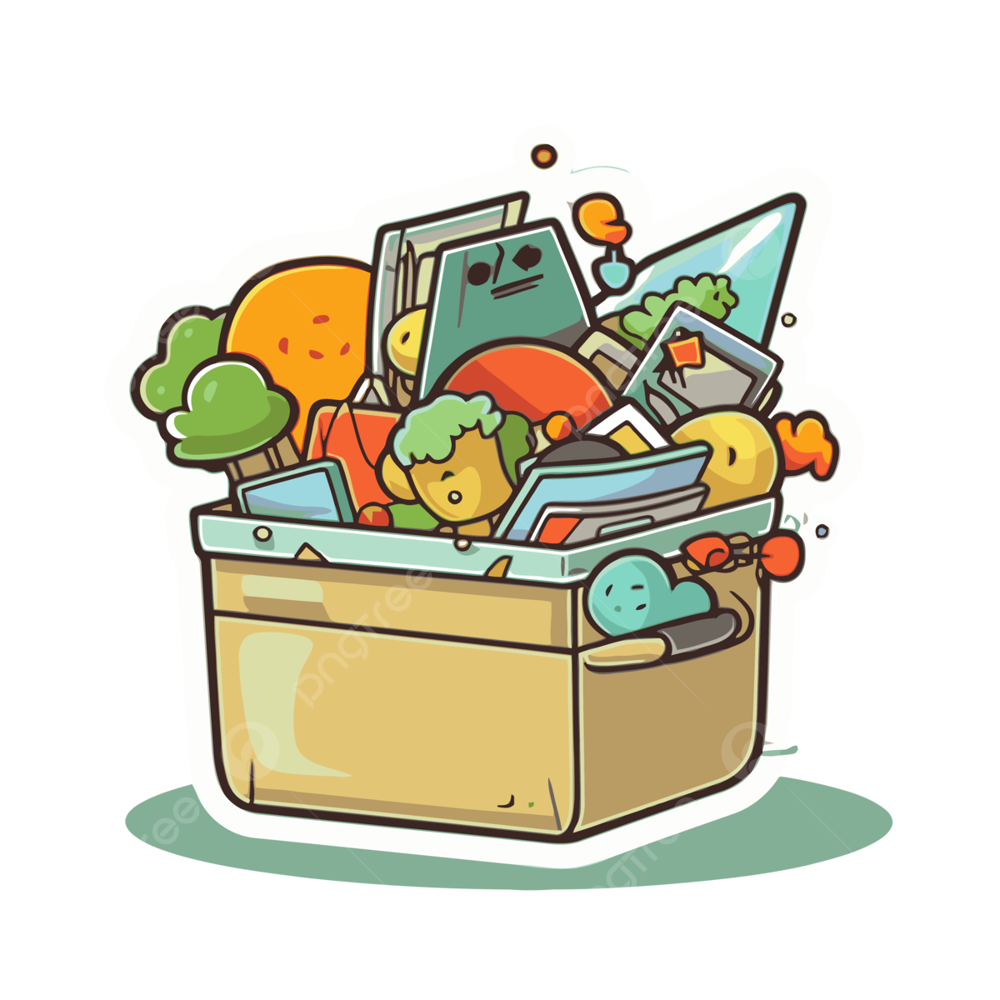
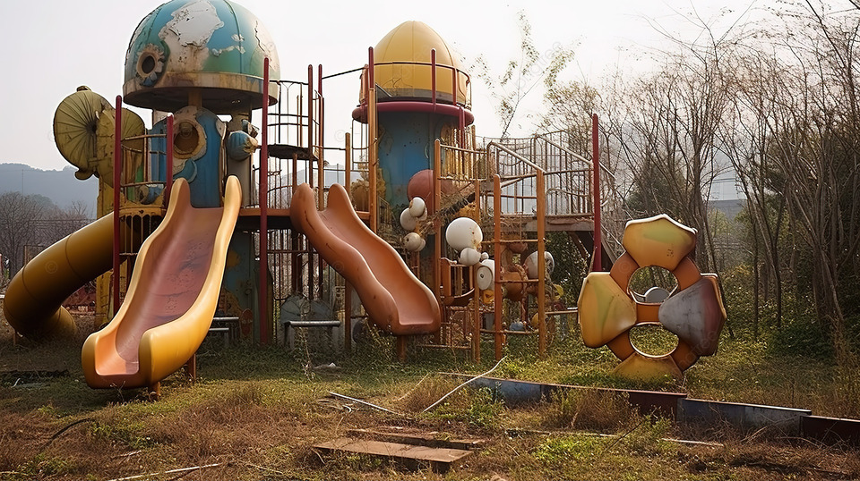
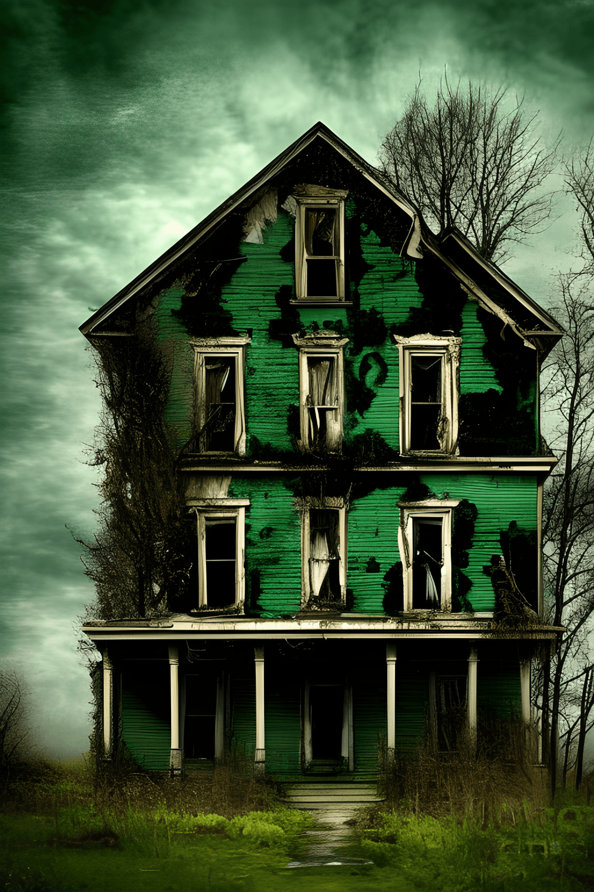
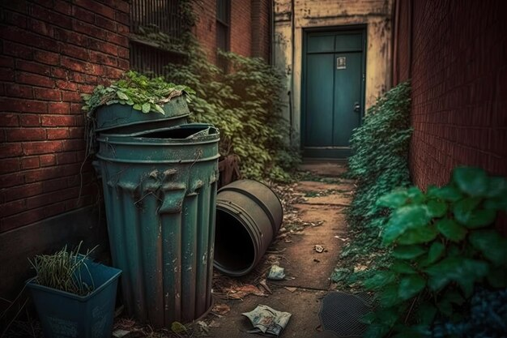
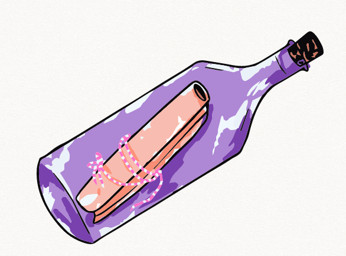

<html lang="pt-BR"></html>
<head>
    <meta charset="UTF-8">
    <meta name="viewport" content="width=device-width, initial-scale=1.0">
    <link rel="stylesheet" href="style.css">
    <link rel="preconnect" href="https://fonts.googleapis.com">
    <link rel="preconnect" href="https://fonts.gstatic.com" crossorigin>
    <link href="https://fonts.googleapis.com/css2?family=Bai+Jamjuree:ital,wght@0,200;0,300;0,400;0,500;0,600;0,700;1,200;1,300;1,400;1,500;1,600;1,700&display=swap" rel="stylesheet">
    <title>Em procura de uma capsula do tempo perdida</title>
</head>
<body>
    <main>
        <div class="passo ativo" id="passo-0">
            
            <p>um dia desses na minha casa encontrei uma caixinha com coisas que eu guardava na época de escola e la tinha uma cartinha com pistas de uma possivel capsula do tempo e eu quis saber se ela ainda existia</p>
            <button class="btn-proximo" data-proximo="1">parque da escola</button>
            <button class="btn-proximo" data-proximo="2">casa antiga da rua mais abandonada da cidade</button>
        </div>
        <div class="passo" id="passo-1">
            
            <p>você começou a procurar no parque da sua antiga escola para encontrar mais pistas sobre a capsula mas ela está fechada fora de funcionamento.</p>
            <button class="btn-proximo" data-proximo="0">Desistir dessa ideia e voltar para casa</button>
        </div>
        <div class="passo" id="passo-2">
            
            <p>você decidiu vim procurar na casa abondonada e a carta diz que a primeira pista é que a próxima pista está em um lugar fedido, o que pode ser a casa inteira já que está abandonada</p>
            <button class="btn-proximo" data-proximo="4">ir para o porão</button>
            <button class="btn-proximo" data-proximo="5"> dar a volta na casa</button>
        </div>
       <div class="passo" id="passo-4">
        
        <p>vocé foi para o porão e realmente tinha razão sobre o maldito cheiro</p>
        <button class="btn-proximo" data-proximo="6">procurar mais um pouco.</button>
        <button class="btn-proximo" data-proximo="0">voltar a estaca zero.</button>
    </div>
    <div class="passo" id="passo-5">
        
        <p>você foi dar a volta na casa e tudo que achou só foi um cheiro forte de lixo.</p>
        <button class="btn-proximo" data-proximo="0">Recomeçar a investigação.</button>
    </div>
    <div class="passo" id="passo-6">
        
        <p>você procurou mais um pouco e finalmente encontrou a capsula.</p>
        <button class="btn-proximo" data-proximo="0">Recomeçar a investigação.</button>
    </main>
    <script src="script.js"></script>
</body>
</html>